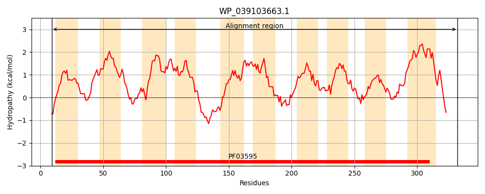
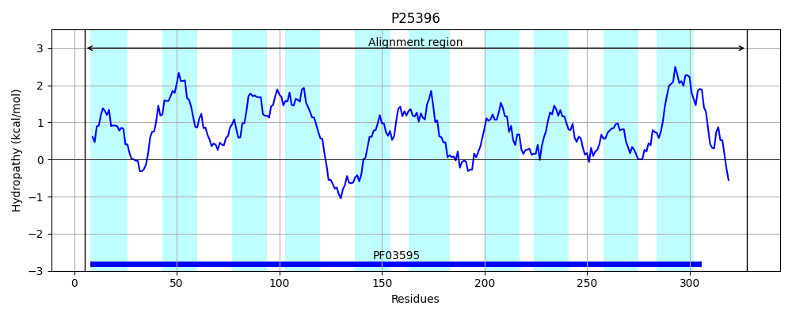
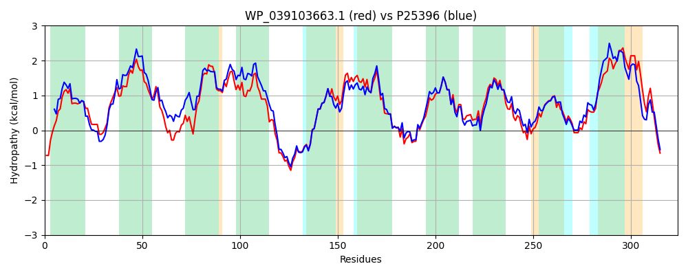

Hit Accession: P25396
Hit TCID: 2.A.16.1.1
Hit Description: gnl|BL_ORD_ID|9536 gnl|TC-DB|P25396|2.A.16.1.1 TELLURITE RESISTANCE PROTEIN TEHA - Escherichia coli.
Mach Len: 324
e:0.000000
Query TMS Count : 10
Hit TMS Count: 10
TMS-Overlap Score: 8.650000
Predicted Substrates:CHEBI:30477;tellurite
BLAST Alignment:
Score: 1338 , Bit scores: 520 bits, E-value: 0.0e+00, Alignment length: 324, Percentage identity: 78
Query: 9 QALNLPAGYFGMVLGTIGMGFAWRYASTLWPVSRSIGDGLVMLAIAMWTLLSMAFISRAIRFPASVLREMRHPVSSSFVSLFPATTLLVAIGLVPWWRPLALGLFVPGVALQLAYAAWQSGGLWRGTHPHEATTPGLYLPTVANNFISAMACGALGFTDAGLVFLGAGVFSWLSLEPAILQRLRSAGELPTPLRTSLGIQLAPALVACSAWLSVNGGEADTFAKLLFGYGLLQLLFMLRLMPWYLRQPFNASFWSFSFGISALATTGLHLGQARADGFFHHLAMPLFIFSNLVVGLLLLRTILLLVSGKLLVQVDRETLLNKKE 332
+ LNLPAGYFG+VLGTIGMGFAWRYAS +W VS +GDGLV+LA+ +W LL+ AFI+R IRFP SVL E+RHPV SSFVSLFPATT+LVAIG VPW+RPLA+ LF GV +QLAYAAWQ+ GLWRG+HP EATTPGLYLPTVANNFISAMACGALG+TDAGLVFLGAGVFSWLSLEP ILQRLRS+GELPT LRTSLGIQLAPALVACSAWLSVNGGE DT AK+LFGYGLLQLLFMLRLMPWYL QPFNASFWSFSFG+SALATTGLHLG +GFFH LA+PLFIF+N ++ +LL+RT LL+ GKLLV+ +R L+ ++
Sbjct: 5 KVLNLPAGYFGIVLGTIGMGFAWRYASQVWQVSHWLGDGLVILAMIIWGLLTSAFIARLIRFPHSVLAEVRHPVLSSFVSLFPATTMLVAIGFVPWFRPLAVCLFSFGVVVQLAYAAWQTAGLWRGSHPEEATTPGLYLPTVANNFISAMACGALGYTDAGLVFLGAGVFSWLSLEPVILQRLRSSGELPTALRTSLGIQLAPALVACSAWLSVNGGEGDTLAKMLFGYGLLQLLFMLRLMPWYLSQPFNASFWSFSFGVSALATTGLHLGSGSDNGFFHTLAVPLFIFTNFIIAILLIRTFALLMQGKLLVRTERAVLMKAED 328 | Protein Hydropathy Plots: |
|---|
|  |  |
Pairwise Alignment-Hydropathy Plot:
|
|---|
|  |